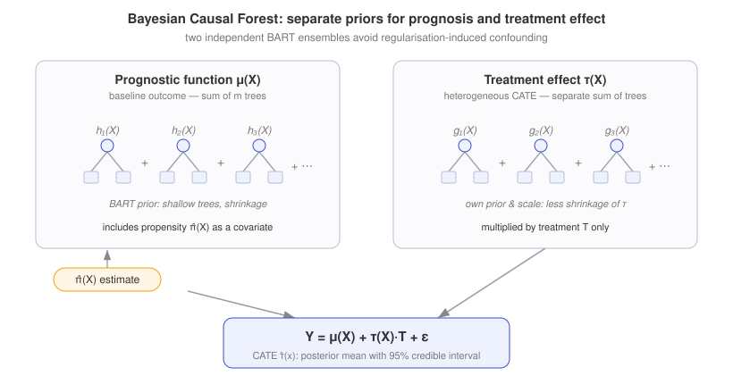
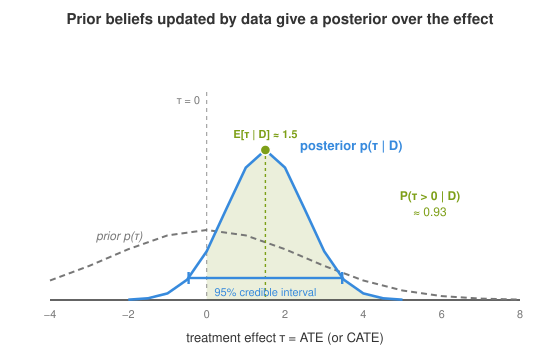

Bayesian Causal Inference#
This section is part of Estimation of Causal Effects, which covers the estimation of causal effects from observational data. While the preceding sections focus on frequentist methods (propensity scores, regression, causal trees/forests), here we take a Bayesian perspective.
Bayesian methods offer a natural framework for causal inference by treating unknown quantities - potential outcomes, treatment effects, and model parameters - as random variables with prior distributions updated by observed data \(D\). This section introduces the key ideas, following Rubin (1978), Imbens & Rubin (2015), and the Causal ML Book.
Why Bayesian Causal Inference?#
In the potential outcomes framework, the fundamental problem is that we observe only one of \(Y(1)\) or \(Y(0)\) for each unit. The Bayesian approach treats the missing potential outcomes as parameters to be inferred:
Prior beliefs encode what we know before seeing the data - for example, that treatment effects are likely small, or that confounders have plausible distributions.
Posterior inference yields a full distribution over causal estimands (ATE, CATE), naturally quantifying uncertainty in a way that frequentist point estimates and confidence intervals do not.
Model comparison via Bayes factors or posterior predictive checks helps select among competing outcome models - functional forms, link functions, priors. It cannot, however, adjudicate between competing causal structures: Markov-equivalent DAGs induce the same likelihood, and the identifying assumptions (exchangeability, positivity) remain as untestable here as in the frequentist setting.
Important
A prior is not a substitute for identification. Bayesian causal inference rests on the same identifying assumptions as its frequentist counterpart - exchangeability (no unmeasured confounding) and positivity. The posterior quantifies uncertainty given those assumptions; it cannot repair their failure. If a confounder \(U\) is omitted, the likelihood is misspecified and the posterior for the ATE will be confidently centred on the wrong value - narrow credible intervals then give a false sense of security. The Bayesian response is an explicit sensitivity analysis: place a prior on the strength of the unmeasured confounder and integrate over it, so the posterior widens to reflect the resulting non-identification (McCandless, Gustafson & Levy, 2007). This is the Bayesian analogue of the E-value and Rosenbaum bounds developed in Sensitivity Analysis.
Bayesian Potential Outcomes Model#
Definition 9 (Bayesian Causal Model)
For each unit \(i\) with covariates \(X_i\) and binary treatment \(T_i\), define the potential outcome models:
with priors \(\theta_0 \sim p(\theta_0)\) and \(\theta_1 \sim p(\theta_1)\). The individual treatment effect is \(\tau_i = Y_i(1) - Y_i(0)\). For a given parameter draw, the ATE is the functional
where the outer \(\mathbb{E}_X\) averages over the covariate distribution. Its posterior distribution is the pushforward of \(p(\theta_0, \theta_1 \mid D)\) through this functional - obtained by drawing \((\theta_0, \theta_1) \sim p(\theta_0, \theta_1 \mid D)\) and evaluating \(\text{ATE}(\theta_0, \theta_1)\) for each draw. Summarising that distribution by its mean gives the posterior mean ATE:
Under Assumption 4, the observed outcome model for unit \(i\) is:
The posterior \(p(\theta_0, \theta_1 \mid D)\) is computed via Bayes’ rule, and the CATE for a new unit with covariates \(x\) is:
Bayesian Propensity Score Methods#
The propensity score \(\pi(x) = P(T=1 \mid X=x)\) can also be estimated within a Bayesian framework, yielding a posterior distribution over the propensity scores and propagating this uncertainty into the causal estimate.
Definition 10 (Bayesian Propensity Score)
Given a model \(T_i \mid X_i, \alpha \sim \text{Bernoulli}(\pi(X_i; \alpha))\) with prior \(\alpha \sim p(\alpha)\), the Bayesian propensity score is the posterior predictive:
Treatment effect estimates built on this posterior propensity score can propagate propensity-model uncertainty into the final interval, rather than conditioning on a single plug-in estimate.
Warning
Fully Bayesian propensity-score analysis is subtler than it looks. In a joint model of \((T, Y)\) the propensity score does not enter the outcome likelihood (Robins & Ritov, 1997; Rubin, 1985), so fitting a single joint posterior lets the outcome model feed back into the propensity model and distort it (Zigler et al., 2013). The standard remedy is to cut the feedback - estimate the propensity posterior from the treatment model alone and then propagate it into the outcome stage (a two-step or “cut” posterior) - so that propagating propensity-model uncertainty does not come at the price of a contaminated propensity score.
Bayesian Additive Regression Trees (BART)#
BART (Chipman, George & McCulloch, 2010) is a sum-of-trees regression model; its use for causal inference was introduced by Hill (2011), and it is now a widely used Bayesian method for heterogeneous treatment effect estimation. It models the outcome as a sum of regression trees with Bayesian priors on tree structure and leaf parameters.
Definition 11 (BART for Causal Inference)
The outcome model is:
where each \(h_j\) is a regression tree with structure \(\mathcal{T}_j\) and leaf parameters \(\mathcal{M}_j\), and \(\varepsilon_i \sim \mathcal{N}(0, \sigma^2)\).
The CATE is estimated as:
where \(\hat{f}\) is the posterior mean of the sum-of-trees model.
BART’s advantages for causal inference include:
Flexible nonparametric modelling of the outcome surface without specifying functional form.
Automatic uncertainty quantification through the posterior distribution - credible intervals for \(\tau(x)\) come directly from the MCMC output.
Regularisation via the tree priors, which favours shallow trees and prevents overfitting.
Bayesian Causal Forests (BCF)#
Hahn, Murray & Carvalho (2020) extend BART specifically for causal inference by separating the prognostic and treatment effect components:
where \(\mu(X_i)\) captures the baseline outcome (prognostic function) and \(\tau(X_i)\) captures the heterogeneous treatment effect. Each is itself a separate sum-of-trees ensemble with its own BART prior - the prognostic trees \(h_j\) build up \(\mu\) and the treatment-effect trees \(g_k\) build up \(\tau\):
These are exactly the trees \(h_j\) and \(g_k\) labelled in the figure below: the two ensembles never share trees, and only \(\tau\) is multiplied by the treatment \(T_i\). This separation lets the treatment effect \(\tau\) be regularised independently of the prognostic function - it can be shrunk towards homogeneity without the strong prognostic signal forcing it to be wiggly, and vice versa.
To counter regularisation-induced confounding - the bias that arises when shrinkage of the prognostic function \(\mu\) distorts \(\tau\) under targeted selection (treatment assignment correlated with the prognostic score) - BCF additionally incorporates the estimated propensity score \(\hat{\pi}(X_i)\) as a covariate in the prognostic model (Hahn, Murray & Carvalho, 2020).


Fig. 19 Bayesian Causal Forest decomposition. The outcome is split into a prognostic function \(\mu(X)\) - the baseline outcome surface - and a treatment effect function \(\tau(X)\), each modelled by its own independent BART ensemble (a sum of shallow, shrunk trees). Giving \(\tau(X)\) a separate prior and scale lets the effect be shrunk towards homogeneity independently of the prognostic surface. To counter regularisation-induced confounding - shrinkage of the prognostic function biasing \(\tau\) under targeted selection - the estimated propensity score \(\hat{\pi}(X)\) enters the prognostic model as an extra covariate (Hahn, Murray & Carvalho, 2020).#
Posterior Inference for Treatment Effects#
Bayesian causal inference outputs a posterior distribution over the estimand, from which we derive:
Quantity |
Interpretation |
|---|---|
\(\mathbb{E}[\tau \mid D]\) |
Posterior mean ATE |
\(\text{Var}[\tau \mid D]\) |
Posterior variance (uncertainty) |
95% credible interval |
\([\tau_{0.025}, \tau_{0.975}]\) from the posterior |
\(P(\tau > 0 \mid D)\) |
Posterior probability that treatment is beneficial |
The posterior probability \(P(\tau(x) > 0 \mid D)\) is particularly useful for decision-making: it directly quantifies the probability that the treatment is beneficial for a given subgroup, which is more interpretable for actuarial applications than a p-value.
Actuarial example: deciding on a care-management rollout
Suppose a health insurer pilots a care-management programme and models its effect on next-year claim cost with BCF. For a candidate policyholder segment \(x\) the output is not a single number but a posterior \(p(\tau(x) \mid D)\). Two summaries drive the decision: the posterior mean saving \(\mathbb{E}[\tau(x) \mid D]\) feeds the expected-cost calculation, while \(P(\tau(x) < 0 \mid D)\) - the posterior probability that the programme actually lowers cost - is the natural input to a rollout rule (“enrol the segment only if we are at least 90% sure the effect is beneficial and the expected saving exceeds the programme cost”). A weakly informative prior that shrinks \(\tau\) towards zero guards against over-enthusiastic rollout on thin data - precisely the small segments where a frequentist point estimate would be noisiest. The same posterior supports a loss-function view: choose the action minimising posterior expected cost rather than acting on a point estimate.


Fig. 20 From prior to posterior. A weakly informative prior \(p(\tau)\) encodes the belief that the effect is plausibly small and centred near zero. After conditioning on the data \(D\), the posterior \(p(\tau \mid D)\) is narrower and shifted, summarising everything we know about the effect. Unlike a frequentist point estimate, it yields the posterior mean \(\mathbb{E}[\tau \mid D]\), a 95% credible interval (a direct probability statement about \(\tau\)), and the decision-relevant posterior probability \(P(\tau > 0 \mid D)\) - the shaded mass to the right of zero.#
Comparison with Frequentist Approaches#
Aspect |
Frequentist |
Bayesian |
|---|---|---|
Uncertainty |
Confidence intervals (coverage guarantee) |
Credible intervals (direct probability) |
Prior information |
Not formally incorporated |
Encoded via priors |
Small samples |
Relies on asymptotic approximations |
Exact finite-sample posterior (conditional on model and prior) |
HTE estimation |
Causal forests (Wager & Athey, 2018) |
BART / BCF (Hill, 2011) |
Model uncertainty |
Model selection or averaging |
Posterior model probabilities |
Computation |
Often closed-form or fast |
MCMC (slower but more flexible) |
Practical Considerations#
Prior sensitivity: Check that conclusions are robust to reasonable prior specifications. Use weakly informative priors as defaults.
Convergence diagnostics: Monitor MCMC chains using \(\hat{R}\) statistics, effective sample size, and trace plots.
Scalability: BART scales well to moderate-dimensional problems (\(p \lesssim 100\)). For very high-dimensional \(X\), variable selection priors or sparsity-inducing modifications (e.g. DART, Linero 2018) may be needed.
Software: Popular implementations include
bartCause(R),dbarts(R), andpymc-bart(Python); for BCF specifically,bcf(R) andstochtree(R/Python).